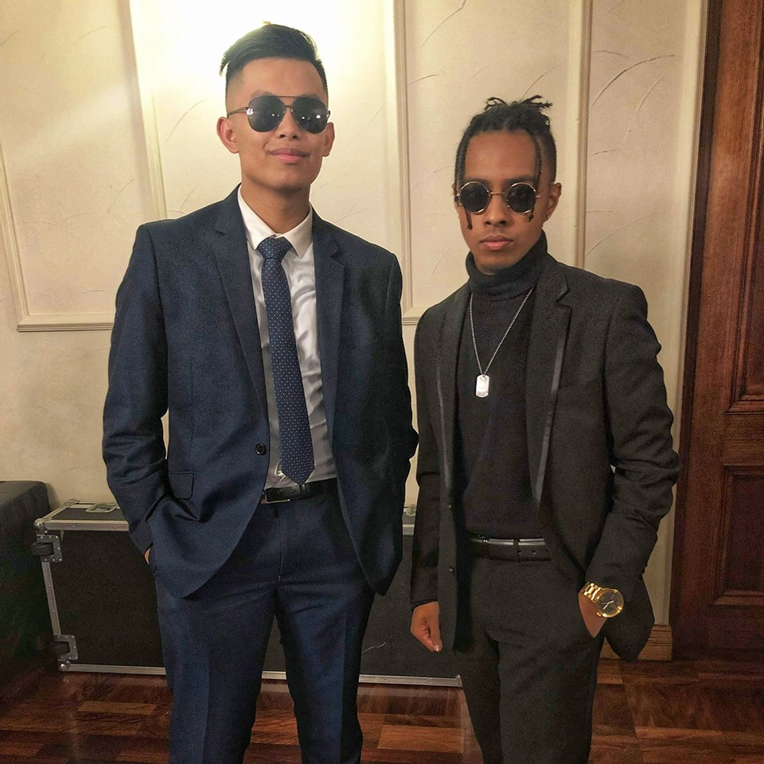
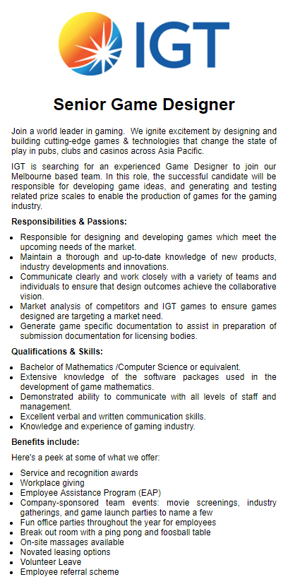
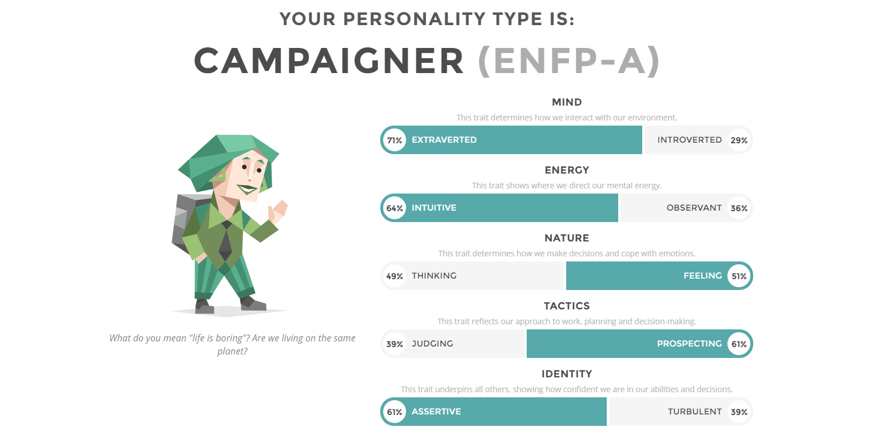
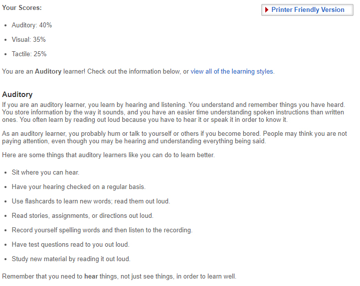
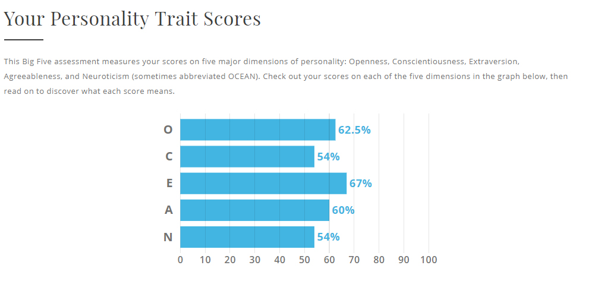

About Me
My name is Jeiel Roco, but if you want my full name it would be Jeiel Gabriel Garcia Roco. My student number is s3781564 and my personal email address is rocojeiel17@gmail.com . I was born in the Philippines and I came to Australia when I was 7 years old, which was the year 2000 and also both my parents were born and raised in the Philippines as well, making me full Filipino. I am currently 18 years of age and my birthday is on the 17th of April, 2000. I can speak two languages, English obviously and Tagalog, which I speak at home. I am fluent in both languages as I speak only Tagalog when with family and English outside of that. A hobby that I like to do when I’m not doing anything is actually creating or editing videos that I believe are funny.

Why am I interested in I.T?
My interest in IT is currently to expand my knowledge about the way technology works, technology such as software, phones, applications, programs, etc. and how I could create them myself. My interest in IT comes from a very young age, I’ve always seen myself as someone who likes technology, most probably due to the fact that since I was very young I’ve been playing a lot of video games and that I’ve always had a passion for computers.
I chose to come to RMIT as a believe that it gave me the best opportunity to maximise my studies and passion for Information Technology. I believe that RMIT will provide me with the best teaching and facilities so that I can do everything I need in order to achieve at the highest level possible to get a job after university.
During my studies I expect to learn topics related to databases, programming, analysing user trends and user experiences. I also expect to learn things about certain software and how they accompany and assist the programming of computers and how they function. All in all I expect that I will be taught all the rele
vant skills that is needed to get the job that I want to pursue in the future.
Ideal Job
The position of ‘Senior Game Designer’ is someone that is responsible in satisfying the needs of consumers in the ever-growing industry of gaming. They must be able to provide a game that a consumer would enjoy and meets the expectations, if they want to bring success to the organisation. This position is particularly appealing to me, as I have always had an interest in creating games from a young age and it would be a dream come true if I could get a position in something that I am very passionate about.
As stated in the advertisement, this position requires various amounts of experience and qualifications such as a Bachelor in either Maths, Computer Science or something that falls under the same bracket. Deep knowledge with the use of software packages related to game mathematics. Have the experience and knowledge of what it is like in the industry side of things in gaming. Lastly, have the ability to properly communicate in a team environment and also possess the verbal skills.
Currently I have no qualifications or skills that would help me in landing this position. As of now, I am about to complete the first month in Bachelor of Information Technology and I believe that I am completing tasks that are relevant to landing this position in the future. I have started learning the very basics of programming and aspects things related to Information Technology. I also have outside experience from playing games myself, so I would know from being a consumer, the needs and wants of the other consumers in the gaming world and the expectations they ask for.
The way I would get the necessary experience required for this job is, finishing a year of Information Technology then getting a transfer to do a degree in Bachelor of Computer Science. I would then finish that degree off and then when I finish, land a job at a small gaming company to gather the experience I need before moving up in the hierarchy. By the time that I have finished all that, I should have the qualifications and skills needed in order to apply for the position and hopefully get it.
Link: https://www.seek.com.au/job/38515875?searchrequesttoken=77e3c409-0cda-4001-a225-a6d2db609e4d&type=standout

If I had a project
If I was to create a project that is supposed to help society, I would develop a game that caters to young children, around ages 5 to 10. The games foundation would be to assist the kids with their education, the way this would be done is by designing the game to attract their attention instead of being a typical ‘educational game’. It would be designed on the Unity engine and it would take the model of an RPG, open-world, type of game. The way that it would assist the children in learning, is by implementing ‘school-related’ questions into the game itself posing as quests or missions.
This would be a useful project to develop because as the years go by, the more advanced technology becomes and along with it, the video game industry also advances. Nowadays, children are able to use an iPad or a gaming console by the time they are able to walk. The current generation of children spend hours and hours staring at a screen, whether it be a mobile device or a TV, playing games. Through my idea, I believe that I could develop a game that would satisfy both the entertainment and educational needs for a young child. They would be able to play it for hours while simultaneously and hopefully, learning along the way.
The game would take place in a fantasy, open-world and simulated environment. At the beginning of the game, the user would be able to create their own character, the purpose of this would be to engage the child into playing the game as customization in games these days tend to give the user the feeling of freedom. The game would be structured as a ‘create-your-own-journey’ type of game rather than a typical linear RPG game. The quests in the game would send the user from environment to environment, challenging them with questions related to subjects like, maths, english, science, etc. However the game would still be implemented with the typical RPG sword fighting mechanics to defeat enemies, in order to keep the attention of the user, asking educational questions would get repetitive and boring. For example, an NPC would give the user a quest to defeat 5 evil rabbits or something like that and in order to complete the quest, they would need to first battle 5 evil rabbits and then go to another NPC and complete a maths question like, “What is 5 x 2?” or something similar that the targeted user would be able to answer. If they are not able to correctly answer the question, they would be given the option of either declining the reward and coming back for it at a later time or to simply try the question again. Most of the quests/missions in the game would take form in this structure otherwise it would take form a puzzle that the user would need to solve. Also, these quests/missions would not only be maths questions, they would include questions related to english, science, history, etc. These questions would also increase in difficulty (challenging to a child of a young age) as the user progresses in the game. In exchange of completing these quests/missions, the user would be rewarded with items in the game, the rarity or strength of these items would be reflected by the difficulty of the quest that the user just completed. In summary, the harder the task they complete, the better reward they would get out of it. By doing this, I would be able to keep the attention of the user as they would find it rewarding to keep participating and completing in these quests, in order to get more superior items. Side-quests would also be implemented in the game to allow a wider range of questions to be asked and more items to unlock for the user. Certain side quests would be structured in a way that the user must be a certain level or have completed a previous quest in order to start it. These types of side quests would give some of the best items in the game as by doing so, the user would be motivated into completing all the quests in the game or get into a certain level, so that they could obtain these items. Also, the questions in the game would take the form pop-up that would appear on the users screen, introducing them to a new interface where they are given space to enter their working out and answers. Thousands of questions would be programmed into the game that range in difficulty and this difficulty would be determined by how fast and how easy the user answers the questions. The length of the game would be determined by how much Unity could support, but ideally to complete the game 100% it would take about 10 hours, so that the user does not spend too long playing it and not short enough that they would be able to finish it too quickly. Once the user has completed the game, they would be given the option to free-roam around the world, start a new character or to restart the game with a harder difficulty.
To undergo this project, I would need a team of programmers, designers and teachers to assist in the creation of the game itself. The teachers would provide the relevant questions that should be included in the game since they would know the right questions to ask a certain age group. The programmers would be in charge of creating the game itself, implementing the code to build the foundation of the game and ensuring that it functions correctly to the users decisions. Finally, the designers would be responsible of the design of the items in the game, the environments and the best layouts for the question boxes or something similar, that would provide the user with the best experience. Unity is an open source engine, that could be used to develop the game, it would be free of charge if the team of creators generate a revenue of less than 100k. In terms of hardware, we would need dozens of computers in order to program and design the game itself.
The skills needed to successfully complete this project are, knowing how game code works, designing the game, being able to write the software to create the actual game and the communication skills to be able to bring together a team to accomplish the goal with the least amount of problems possible. Finding the hardware should not be hard as there are many available sources that will provide top of the line hardware, in order to create the game itself. Finding the right people with the skills should also not be hard to find as nowadays there are many individuals who have taken up a position in the gaming industry, whether it be designing or programming. What should be challenging though is to find the budget needed in order to complete designing the game at a high standard.
If the project is successful, then I would hope that the user would be encouraged into participating and answering educational questions when they are at school or at home. They would invite challenge instead of deterring it away or simply giving up and because of this, I hope that as they grow older into teenagers and adults, they would see education as something that is fun and they should be passionate for, motivating them to learn. Rather than something that only induces stress or should be ignored, that leads to laziness or giving the individual no motivation in doing anything related to education.
Online Test Results
The results from these tests has given me the idea of what type of person I am when it comes to being in a social environment, how I learn and also how I am as a person personality wise. These results will have an influence in my behaviour in a team as for example someone who is less ‘extraverted’ when compared to me, would find it more difficult to feel inclined to join in the group conversation. Other factors such as agreeableness would also come into play in a group environment, as they would influence how the chemistry and work rate of the group. If I was to form a group with taking into account the results that I have received from these tests, I would personally group up with those who are both similar and completely different to my results. As I believe that you need a balance between the two otherwise, there could be a problem where there is too many people that are similar and want the work to be done ‘their’ way. This would cause delays and problems with the work done and progress in the team.
Myers-Briggs Test Result:

Learning Style Test Result:

Personality Test Result:
